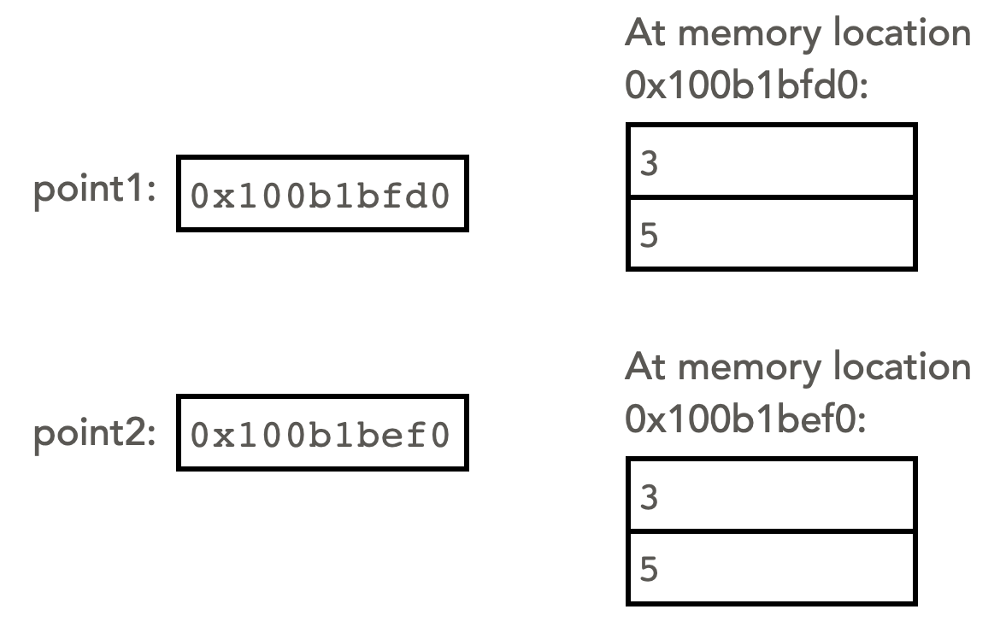

Variables are references to objects
A variable that refers to an object is technically a reference. This means that the variable stores the memory address of the object itself (in other words, the location in your computer's memory where the full data for the object is stored). To see this in action, consider this implementation of the class Point, which has no __str__() method:
from __future__ import annotations
class Point:
def __init__(self, x, y):
# initialize the values of the point (x, y)
self.x = x
self.y = y
# main code block:
point1 = Point(3, 5)
point2 = Point(3, 5)
print(point1)
print(point2)
output:
<__main__.Point object at 0x100b1bfd0>
<__main__.Point object at 0x100b1be50>
Without the ___str__() method to override the form of the output, python returns the contents of the variable, which is its memory address (shown in the above output as a hexadecimal number).
This means that the number stored in each variable is a memory address. Examining the values stored at that memory address, we find the actual data associated with the object. So the variable is a reference of where to find the actual contents of the object. We can represent this situation visually with this memory diagram:
It is awkward to write the values of the memory addresses themselves, in particular because without running the program, we do not even know what these memory addresses will be. Therefore, by convention we represent memory diagrams like the literal one above more abstractly by using arrows. The start of the arrow is inside the reference variable, and the arrow points to the part of the diagram where the data itself is held. Because the arrow starts within the reference variable's box, it represents that the information stored in the variable is a memory address. The endpoint of the arrow represents where that memory address points to.

We view the literal and abstract memory diagrams as equivalent, and we prefer the abstract version because it is easier to visually process. The arrows make it clear that each variable is a reference to an object.
The python id() function
Suppose we now implement the __str__() method in the Point class, as shown below:
class Point:
def __init__(self, x, y):
# initialize the values of the point (x, y)
self.x = x
self.y = y
def __str__(self)->str:
return f"({self.x}, {self.y})"
# main code block:
point1 = Point(3, 5)
point2 = Point(3, 5)
print(point1)
print(point2)
output:
(3, 5)
(3, 5)
Now that the __str__() has been implemented, when we output the object to the terminal, we no longer see the memory address. However, we can still find out the memory address where the object is stored by using the python id() function:
print(id(point1))
print(id(point2))
output:
4306616272
4306615888
These are the memory addresses of where the objects are stored, in decimal.
Note that the two ids that are output above are not the same. Even though point1 and point2 have the same values, they are distinct objects, stored in separate memory locations. Note that if we were to change the x or y values of one of the points, the other would not change, since they are separate objects.
Copying references
Suppose we modify the main code block to the following:
# main code block:
point1 = Point(3, 5)
point2 = Point(3, 5)
point3 = point2
The last line in the above code is an assignment statement, that stores in point3 the value found in point2. Since that value is a reference (a memory address), the result is to copy the memory address to point3. Here is a literal memory diagram showing the result of the assignment statement. Note that point2 and point3 store the same memory address, so they have the same id.

The abstract version of this diagram (using arrows instead of actual memory addresses) is below. The arrows make it more obvious that two variables (point2 and point3) are referring to the same object. There are only two different Point objects, since only two Point objects were instantiated.

Suppose now we modify the contents of point2:
point2.x = 7
print(point1)
print(point2)
print(point3)
Since point2 and point3 refer to the same object, changing one of them also changes the other, as seen in the memory diagram below. Note that point1 refers to an entirely different object, so it is not changed.
The output of the above code is:
(3, 5)
(7, 5)
(7, 5)